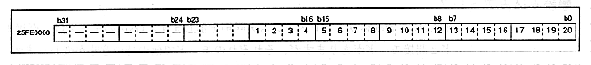
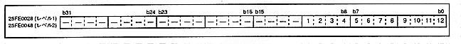
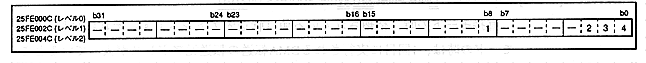

-
● Number of bytes transferred
- Stores the number of bytes transferred by DMA. Figure 3.3 shows the details of the level 0 transfer byte count, and Figure 3.4 shows the level 2-1 transfer byte count details.
Figure 3.3 Level 0 Transfer Bytes (Register: D0C) Initial value is undefined

- Level 0 transfer byte count (1 to 20 [bit 19 to 0] in Figure 3.3)
D0C19-0 (R / W) DMA level 0 Count bit19-0
- Stores the number of bytes of DMA transfer that operates at level 0. When the DMA is operating, the register at that level is write-protected. This register can be set up to 1MByte.
Figure 3.4 Level 2-1 Transfer Bytes (Register: D1C, D2C) Initial value is undefined

- Level 2-1 transfer byte count (1 to 12 [bit 11 to 0] in Figure 3.4)
DxC11-0 [x = 2-1] (R / W) DMA level 2-1 Count bit11-0
- Stores the number of bytes of DMA transfer operating at level 2 or 1. When the DMA is operating, the register at that level is write-protected. This register can be set up to 4KByte.
-
Addition value register
- Figure 3.5 shows the details of the added value register.
Figure 3.5 Level 2-0 address addition value (register: D0AD, D1AD, D2AD) Initial value 00000101H
